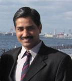

|  | Prof. D.K. Chaturvedi DayalBagh Educational Institute |

Technical Committe:
- Technical committee members for 2010-2011 of The International Association of Science and Technology for Development (IASTED), which is a non-profit organization devoted to promoting economic and cultural advancement. Established in 1977, IASTED organizes multidisciplinary conferences for academics and professionals, mainly in the fields of engineering, science, and education. IASTED holds conferences and courses in both industrialized and developing nations. He reviewed 3-papers for Int. Conf. on Modeling and Simulation (MS’10), Banff, Canada.